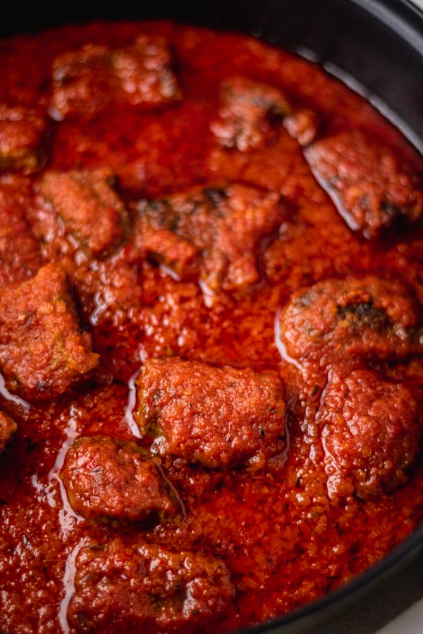

Create rich flavor and broth base
Season the meat with half the sliced onion, 1 bouillon cube, thyme and salt. Cook with a little water until tender. Reserve the meat broth(stock), then optionally fry or oven-roast the meat until golden brown.
Remove raw water content
Blend the tomatoes, re bell peppers, scotch bonnets, and large onion until smooth. Pour into a pot and boil uncovered on medium heat for 10-15 minutes until the excess water evaporates and the puree thickens.
Eliminate the raw, tart taste
Heat vegetable oil in a deep pot over medium heat. Add the remaining sliced onions and fry for 2 minutes. Add the canned tomato paste and stir-fry continuously for about 5 minutes to eliminate sourness.
Fuses the flavors together
Pour in the reduced pepper blend and stir well. Reduce heat to medium-low and fry for 15-20 minutes, stirring occasionally, until the oil brgins to separate and float to the top.
Final flavor balance
Stir the reserved meat stock, remaining bouillon cube, cuury powder, bay leaves and fried meat. Simmer uncovered low heat for 10-15 minutes until the stew thickens and the meat absorbs the flavor.
Serve hot over steamed white rice, boiled yam or plantains.